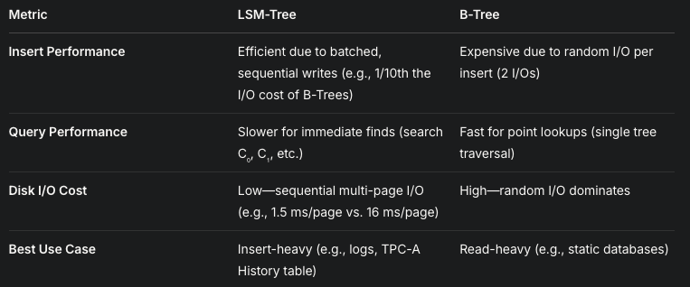

This paper introduces the Log-Structured Merge-Tree, a disk-based data structure tailored for environments with high rates of record insertions (and deletions), such as transactions logs or history tables. It contrasts LSM-Tree with traditional indexing methods like B-Tress, which struggle under heavy write workloads due to excessive disk I/O. The LSM-Tree aims to minimize this I/O cost by leveraging a combination of memory and disk storage, batching operations, and optimizing for sequantial writes
The LSM-Tree is a write-optimized data structure desgined to :
Context : The paper uses the TPC-A benchmark (a transaction processing standard) as a case study. In TPC-A, each transaction inserts a row into a History Table. Maintaining real-time index (e.g by account ID) with a B-Tree I/O costs, while the LSM-Tree reduces this significantly
2.1 The Problem with Traditional Indexing (B-Trees)
Analogy with the Paper : Imagine a librarian (disk arm) updating a card catalog (B-Tree) by physically walking to a random drawer for every new book added—inefficient and time-consuming.
2.1 The Solution
Analogy with the Paper : Instead of updating the catalog for every book, the librarian writes new entries in a notebook (C₀) and periodically transfers a sorted batch to the catalog (C₁) in one go—faster and less effort.
While implementing this paper, I personally learnt a lot about tree data structures and its types also used resources like this [Link] to know more indepth about B Trees and B+ Trees.
3.1 Two Component Model
A schematic shows C₀ as a small, fast memory layer feeding into the larger, slower C₁ disk layer. What do we get to know from this ?, batching in C₀ avoids the immediate 2 I/O penalty of B-Trees, deferring disk writes until a merge is needed.
3.2 The Rolling Merge Process
Depicts a cascade of components, showing how data flows from memory to deeper disk levels. What do we get to know from this ?, multi-component LSM-Trees scale efficiently by distributing data across multiple disk layers, optimizing both memory and disk usage.
4.1 Comparing LSM-Trees to B-Trees
4.2 Cost Reduction in LSM-Trees
Understanding this by an example: In TPC-A, querying recent account activity might hit C₀ (memory) for the last minute's data, then C₁ (disk) for older data, taking slightly longer than a B-Tree but still practical.
I always go with phrases which can explain anything to anyone. No need of prior context, I recommend to every other engineer to build this habbit along with your learning phase of your life .
Remember you were a librarian a while back now you are managing a massive, ever-growing catalog of books (like transaction logs or history records) where new entries pour in constantly, but people rarely look them up. A traditional catalog (like a B-Tree) forces you to walk to a random shelf, pull out a card, update it, and put it back every time a book arrives—slow and exhausting due to all the back-and-forth (random disk I/O). The LSM-Tree is like a smarter system: you jot down new entries in a small notebook (memory-based C₀ tree) that’s quick to use. When the notebook fills up, you don’t update the main catalog one-by-one; instead, you sort the batch and merge it into a big, organized ledger (disk-based C₁ tree) in one smooth sweep (sequential writes). For really huge libraries, you might add more ledgers (C₂, C₃, etc.), passing data down in stages. This cuts down on frantic running around (disk arm costs), saving time and effort (I/O overhead). Finding a book (querying) takes a bit longer since you check the notebook and ledgers, but that’s okay because adding books (inserts) is the priority. In short, the LSM-Tree trades a little read speed for a lot of write efficiency, perfect for systems drowning in new data but light on lookups.